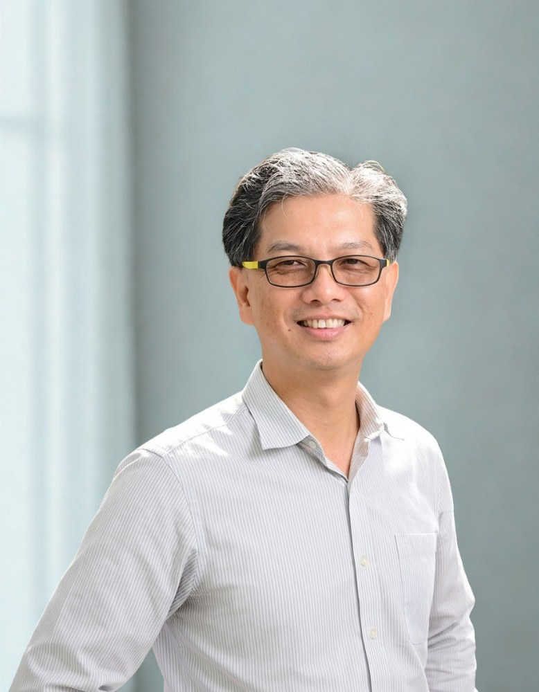

Every child is a seed; the school is a garden.
每個孩子都是一顆種子，學校是一座用心耕耘的花園。

PrincipalPrincipal Hung Hsin-te leads Fangyuan Elementary School as its incumbent principal. He previously served as principal of Sigang Elementary School in Changhua County's Dacheng Township, and currently also serves as Deputy Convener of the Changhua County Elementary Education Advisory Group for the Nature & Living Technology field.
From a driftwood art workshop on the Zhuoshui River to a unicycle team on the world stage, Principal Hung's schools turn local materials into real learning.
從濁水溪畔的漂流木藝術工作坊，到站上世界舞台的獨輪車隊，洪校長帶領的學校，總能把在地素材化為真實的學習。
The essence of education is to guide people toward goodness. A teacher's duty is to help students find their own direction and build the ability to fulfill their dreams. A principal's role is to do everything possible to help that happen — to be an angel for both oneself and others, using one wing to help oneself and one wing to help others, so that together we can take flight. 教育的本質，在引人為善。教師的責任，在協助學生找到自己的方向，培養完成夢想的能力。校長的角色，則在盡其所能成就一切——做自己與別人生命的天使，一支翅膀幫助自己，一支翅膀幫助別人，這一對翅膀帶我們翱翔。
At our school, we treat every child with care and let them each shine in their own way. Every child is unique, like a seed — some plump, some slender, some plain, some beautiful. Education is the sunlight, the air, and the water: with patience, respect for difference, and loving care, every seed will eventually bloom into its own uniquely beautiful flower. Students are the seeds; the school is the garden — and I tend it with all my heart. 在學校裡我們善待每一個孩子，讓他們各展所長，開創幸福。每個孩子都是獨一無二的，就像那一顆顆或胖或瘦、或美或醜的種子。教育就像陽光、空氣、水，我們用心對待、尊重差異、耐心等待，每一顆種子都將開出風姿各異的美麗花朵。學生如種子，學校如花園，我用心耕耘這座真善美的幸福花園。
"Love makes the world go around." — Charles Dickens. Love is at the very center of education. I hope to hold each student as my own, refine an education built on virtue and wisdom, and help every child sail out into the wide blue sea to find their own treasure island. 狄更斯說：「愛使世界轉動。」愛是教育的核心。我願以「視生如子」的人文情懷，精進「以德成人，以智成才」的教育作為，讓孩子們在遼闊藍海裡，與我一起尋找屬於自己的金銀島。
Educators, parents, and friends are warmly welcome to visit Fangyuan Elementary — a newly rebuilt, green-building campus by Changhua's largest muddy tidal flat.
歡迎教育工作者、家長與朋友蒞校交流。芳苑國小是一所濱臨全國最大泥質潮間帶、新改建的綠建築校園。